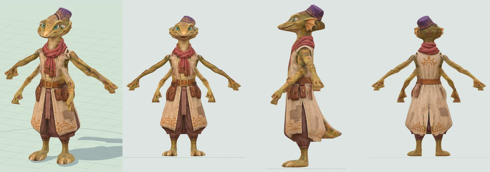
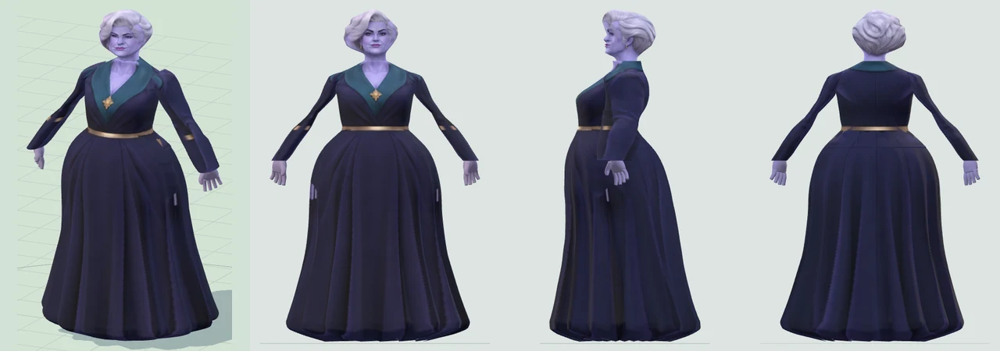

Dragon’s Dogma 2
Coast cartographer
A tall angular face, pale swept hair and worn field clothes. Compare the nose and brow in profile. The small scar and leather detail depend strongly on the surface artwork.

Inspect the head

Can one editor make a convincing human face, a four-armed merchant and a clothed character with a distinct silhouette? These six original models come from the workshop. The linked community creations supply each design target.

Dragon’s Dogma 2
A tall angular face, pale swept hair and worn field clothes. Compare the nose and brow in profile. The small scar and leather detail depend strongly on the surface artwork.
Dragon’s Dogma 2
A short broad adult with a projecting belly, full cheeks and glasses. Compare the two human profiles at one scale. The soft chin is visible in clay, while the fine frames rely on paint.


Spore
Four independent arms with separate hands, a long muzzle and a travelling coat. Maxis singled out the extra hands. Count all four in three-quarter view, then orbit to see where the lower pair meet the trunk.

Spore
Maxis called attention to the repeated tooth-like armor. The porter carries fifteen individually selectable dorsal plates. Compare the rear outline in clay with the shoulder and forearm from the side.

The Sims 4
A mature adult with lilac skin, swept hair and a long formal gown. The skirt has real pleats and its own rig. Base layer reveals the legs and body inside it. The shoulder silhouette still looks narrower than the brief.


The Sims 4
A lean runner in a dark close-cut top, pale trousers and red shoes. Compare the short bob and leg profile against the cartographer at equal height. A near-touching hand and trouser edge exposed a defect in automatic biped fitting.


| Experiment | Observation |
|---|---|
| Recognize form without paint | A blinded Fable 5.2 High review correctly matched six shuffled clay studies to six descriptions in a single forced-choice trial. The cartographer and scout earned medium confidence. The observer relied on clothing and hair for those two. Four arms and a flared gown were much easier to recognize. This trial measures broad character types. Facial likeness needs close distractors and human raters. |
| Reach a new structure | Two accepted live Codex proposals produced a six-legged beetle and a low four-legged estuary glider. The glider’s crest became visible after fixing how children attach to small primitives. In a separate trial starting with the foreman, one accepted response grafted a painted clawed arm and three shell plates while preserving the protected face. Its oversized arm obscured part of the silhouette. |
| Take the result into a game | Fourteen exported GLBs passed the Khronos validator with zero errors and warnings and loaded in a separate Three.js player. Each contains an articulated skin and four clips. Eight poses per clip were inspected using the skinned vertices. This exposed up to 20 cm of floor penetration in long skirts. After adding hem joints and correcting the root from sampled sole heights, all fourteen stayed within 2 cm of the floor in this test. |
| Check variety at equal height | Foreground masks are bottom-aligned and rescaled to 192 pixels tall. For each pair the score is one minus intersection over union. Identical contours give zero. Compare front and side separately. Front and rear orthographic silhouettes are almost identical under reflection for these mostly symmetric bodies. Measured pairwise scores. |
Start with a fresh form. Protect the face, pull one shoulder outward and ask for an asymmetrical bulky suit. Check side and rear views, then play Walk and Crouch. Compare the same character in base layer and work clothes. A recognizable result from a different camera and outfit is a tougher test than selecting an authored study.
The game comparisons cover the selected features. The current measurements leave open likeness under close facial distractors, automatic fitting of arbitrary garments, and locomotion on uneven terrain. The 2D consistency experiment remains in the research plan.